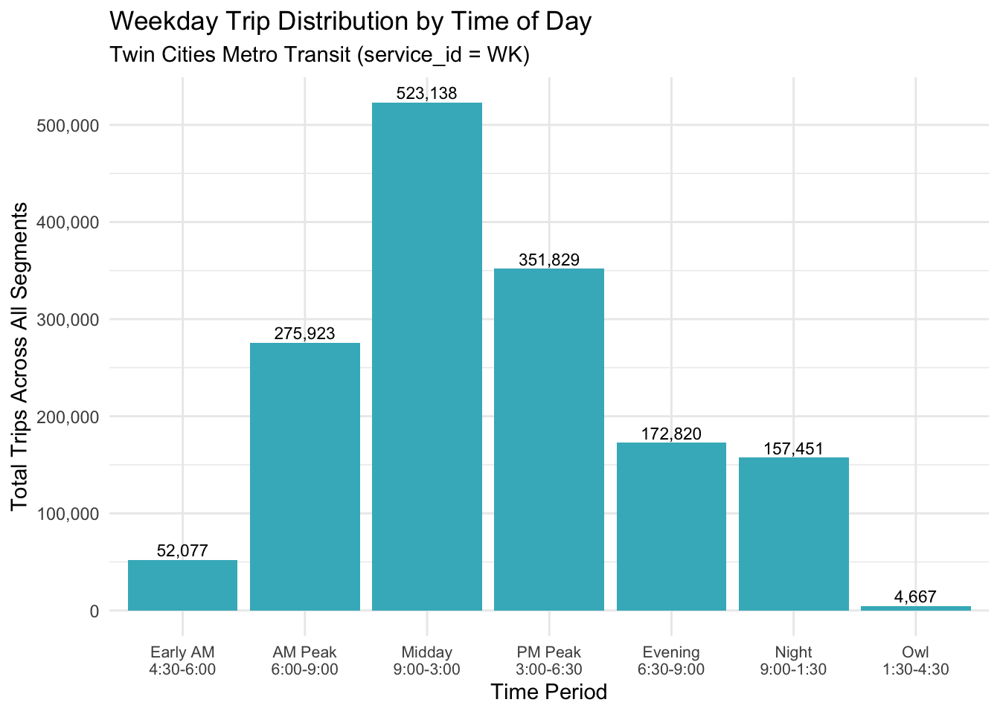
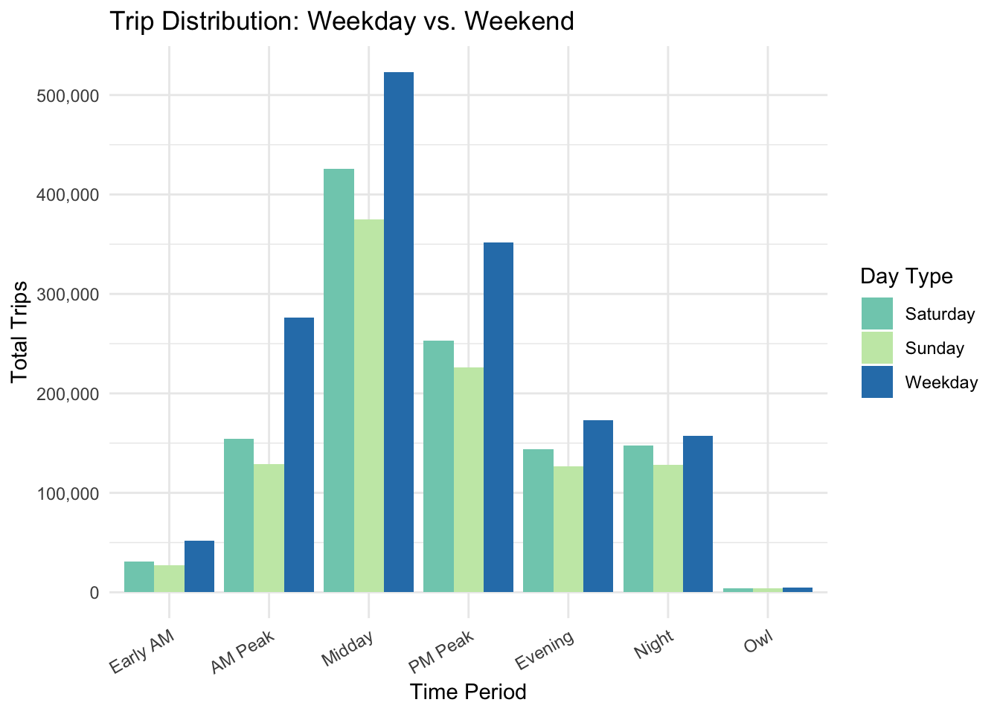
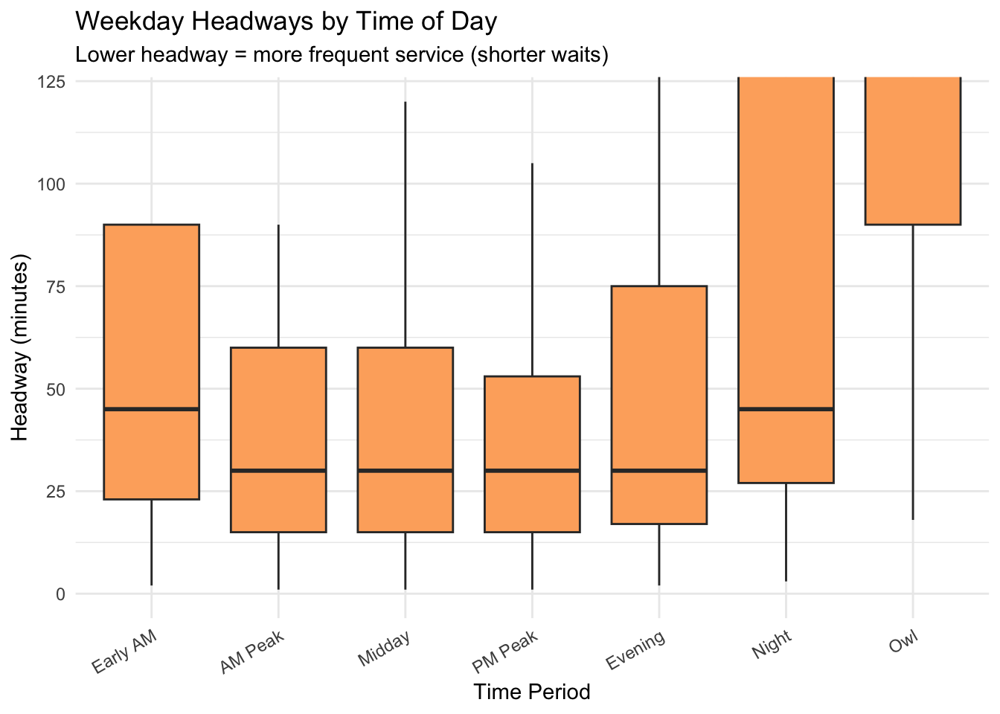
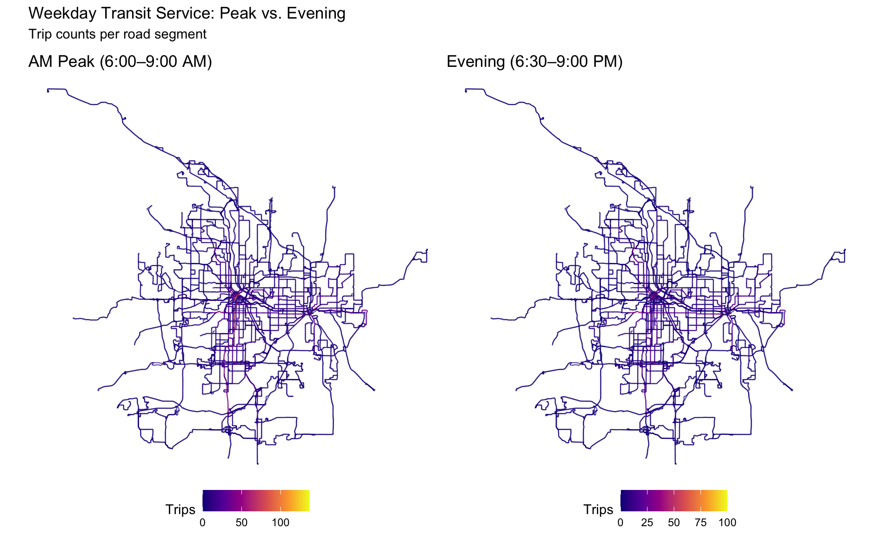
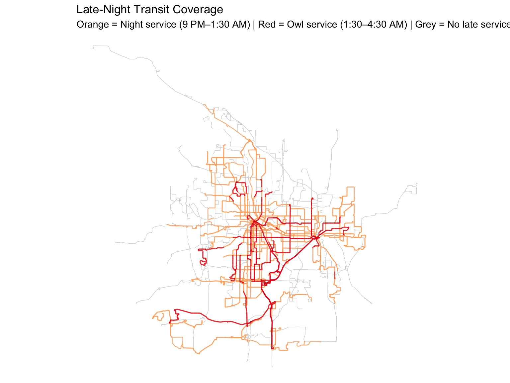

Laurice J. EDA — Temporal Patterns in Metro Transit Service
Overview
While my teammates explored the relationship between transit service and median household income, this EDA examines temporal patterns in Metro Transit service: how trip frequency and headways (wait times) vary by time of day and day of week across the Twin Cities metro. Understanding these patterns helps identify when and where service is strongest — and where gaps exist.
Setup
Load Data
Reading layer `TransitCountHeadwaySummary' from data source
`/Users/hadleywilkins/Documents/COMP212/project-metrotransit-rishika-hadley/data/raw/shp_trans_transit_count_headway_sum'
using driver `ESRI Shapefile'
Simple feature collection with 75634 features and 23 fields
Geometry type: MULTILINESTRING
Dimension: XY
Bounding box: xmin: 442648 ymin: 4948258 xmax: 515316.2 ymax: 5020153
Projected CRS: NAD83 / UTM zone 15NRows: 75,634
Columns: 24
$ service_id <chr> "SAT", "SAT", "SAT", "SAT", "SAT", "SAT", "SAT", "SAT", "SA…
$ line_direc <dbl> 0, 0, 0, 0, 0, 0, 0, 0, 0, 0, 0, 0, 0, 0, 0, 0, 0, 0, 0, 0,…
$ RoadSeg_ID <chr> "000F4998-F58A-4BEF-9154-2410CE7B8695", "41557529-134D-48C5…
$ EAM_count <dbl> 0, 3, 0, 0, 0, 3, 0, 0, 0, 0, 0, 0, 0, 2, 2, 2, 0, 0, 0, 0,…
$ AMP_count <dbl> 1, 14, 3, 3, 5, 15, 3, 0, 3, 0, 1, 5, 2, 8, 26, 8, 1, 3, 4,…
$ MID_count <dbl> 6, 30, 16, 12, 12, 30, 6, 16, 8, 3, 3, 12, 6, 34, 60, 34, 6…
$ PMP_count <dbl> 3, 18, 11, 6, 7, 18, 4, 14, 4, 4, 2, 7, 3, 19, 35, 19, 4, 4…
$ EVE_count <dbl> 1, 10, 3, 4, 5, 10, 2, 0, 4, 2, 1, 4, 3, 7, 17, 7, 1, 1, 5,…
$ NIGHT_coun <dbl> 0, 10, 1, 0, 8, 9, 4, 0, 1, 3, 1, 9, 1, 8, 25, 8, 0, 0, 6, …
$ OWL_count <dbl> 0, 0, 0, 0, 0, 0, 0, 0, 0, 0, 0, 0, 0, 0, 0, 0, 0, 0, 0, 0,…
$ TripCount <dbl> 11, 85, 34, 25, 37, 85, 19, 30, 20, 12, 8, 37, 15, 78, 165,…
$ EAM_hdwy <dbl> 0, 30, 0, 0, 0, 30, 0, 0, 0, 0, 0, 0, 0, 45, 45, 45, 0, 0, …
$ AMP_hdwy <dbl> 180, 13, 60, 60, 36, 12, 60, 0, 60, 0, 180, 36, 90, 23, 7, …
$ MID_hdwy <dbl> 60, 12, 23, 30, 30, 12, 60, 23, 45, 120, 120, 30, 60, 11, 6…
$ PMP_hdwy <dbl> 70, 12, 19, 35, 30, 12, 53, 15, 53, 53, 105, 30, 70, 11, 6,…
$ EVE_hdwy <dbl> 150, 15, 50, 38, 30, 15, 75, 0, 38, 75, 150, 38, 50, 21, 9,…
$ NIGHT_hdwy <dbl> 0, 27, 270, 0, 34, 30, 68, 0, 270, 90, 270, 30, 270, 34, 11…
$ OWL_hdwy <dbl> 0, 0, 0, 0, 0, 0, 0, 0, 0, 0, 0, 0, 0, 0, 0, 0, 0, 0, 0, 0,…
$ created_us <chr> "SVC-GISBATCH", "SVC-GISBATCH", "SVC-GISBATCH", "SVC-GISBAT…
$ created_da <date> 2026-03-21, 2026-03-21, 2026-03-21, 2026-03-21, 2026-03-21…
$ last_edite <chr> "SVC-GISBATCH", "SVC-GISBATCH", "SVC-GISBATCH", "SVC-GISBAT…
$ last_edi_1 <date> 2026-03-21, 2026-03-21, 2026-03-21, 2026-03-21, 2026-03-21…
$ Shape_Leng <dbl> 140.780997, 160.108840, 365.814556, 64.000694, 121.240641, …
$ geometry <MULTILINESTRING [m]> MULTILINESTRING ((466822.1 ..., MULTILINEST…Understanding the Temporal Fields
The dataset contains trip counts and headways (minutes between trips) for seven time periods:
| Period | Abbreviation | Time Range |
|---|---|---|
| Early Morning | EAM | 4:30–6:00 AM |
| AM Peak | AMP | 6:00–9:00 AM |
| Midday | MID | 9:00 AM–3:00 PM |
| PM Peak | PMP | 3:00–6:30 PM |
| Evening | EVE | 6:30–9:00 PM |
| Night | NIGHT | 9:00 PM–1:30 AM |
| Owl | OWL | 1:30–4:30 AM |
The service_id field indicates the day type: WK (weekday), SAT (Saturday), SUN (Sunday), FRI (Friday), HOL (Holiday).
1. Service Volume by Day Type
Code
# A tibble: 3 × 4
service_id total_trips n_segments avg_trips_per_segment
<chr> <dbl> <int> <dbl>
1 WK 1537905 33754 45.6
2 SAT 1159189 22392 51.8
3 SUN 1016553 19488 52.22. Trip Distribution Across Time of Day
This is the core of the temporal analysis — how does service shift throughout the day?
Code
# Pivot trip count columns to long format for weekday service
time_periods <- c("EAM_count", "AMP_count", "MID_count", "PMP_count",
"EVE_count", "NIGHT_coun", "OWL_count")
period_labels <- c("Early AM\n4:30-6:00",
"AM Peak\n6:00-9:00",
"Midday\n9:00-3:00",
"PM Peak\n3:00-6:30",
"Evening\n6:30-9:00",
"Night\n9:00-1:30",
"Owl\n1:30-4:30")
# Filter to weekday service for the main temporal view
wk_data <- df %>%
st_drop_geometry() %>%
filter(service_id == "WK")
trips_long <- wk_data %>%
select(all_of(time_periods)) %>%
summarise(across(everything(), ~sum(.x, na.rm = TRUE))) %>%
pivot_longer(everything(), names_to = "period", values_to = "trips") %>%
mutate(period_label = factor(period_labels, levels = period_labels))
ggplot(trips_long, aes(x = period_label, y = trips)) +
geom_col(fill = "#41b6c4") +
geom_text(aes(label = comma(trips)), vjust = -0.3, size = 3) +
scale_y_continuous(labels = comma) +
labs(
title = "Weekday Trip Distribution by Time of Day",
subtitle = "Twin Cities Metro Transit (service_id = WK)",
x = "Time Period",
y = "Total Trips Across All Segments"
) +
theme_minimal() +
theme(axis.text.x = element_text(size = 8))
3. Weekday vs. Weekend Temporal Profiles
Code
# Compare weekday, Saturday, and Sunday profiles
day_types <- c("WK", "SAT", "SUN")
temporal_by_day <- df %>%
st_drop_geometry() %>%
filter(service_id %in% day_types) %>%
group_by(service_id) %>%
summarise(across(all_of(time_periods), ~sum(.x, na.rm = TRUE)), .groups = "drop") %>%
pivot_longer(-service_id, names_to = "period", values_to = "trips") %>%
mutate(
period_label = factor(
recode(period,
"EAM_count" = "Early AM",
"AMP_count" = "AM Peak",
"MID_count" = "Midday",
"PMP_count" = "PM Peak",
"EVE_count" = "Evening",
"NIGHT_coun" = "Night",
"OWL_count" = "Owl"),
levels = c("Early AM", "AM Peak", "Midday", "PM Peak", "Evening", "Night", "Owl")
),
service_id = recode(service_id, "WK" = "Weekday", "SAT" = "Saturday", "SUN" = "Sunday")
)
ggplot(temporal_by_day, aes(x = period_label, y = trips, fill = service_id)) +
geom_col(position = "dodge") +
scale_fill_manual(values = c("Weekday" = "#2c7fb8", "Saturday" = "#7fcdbb", "Sunday" = "#c7e9b4")) +
scale_y_continuous(labels = comma) +
labs(
title = "Trip Distribution: Weekday vs. Weekend",
x = "Time Period",
y = "Total Trips",
fill = "Day Type"
) +
theme_minimal() +
theme(axis.text.x = element_text(angle = 30, hjust = 1))
4. Headway Analysis — How Long Do Riders Wait?
Headway (minutes between trips) is a key measure of service quality. Lower headways mean shorter waits.
Code
headway_cols <- c("EAM_hdwy", "AMP_hdwy", "MID_hdwy", "PMP_hdwy",
"EVE_hdwy", "NIGHT_hdwy", "OWL_hdwy")
headway_summary <- wk_data %>%
select(all_of(headway_cols)) %>%
pivot_longer(everything(), names_to = "period", values_to = "headway") %>%
filter(headway > 0) %>%
mutate(
period_label = factor(
recode(period,
"EAM_hdwy" = "Early AM",
"AMP_hdwy" = "AM Peak",
"MID_hdwy" = "Midday",
"PMP_hdwy" = "PM Peak",
"EVE_hdwy" = "Evening",
"NIGHT_hdwy" = "Night",
"OWL_hdwy" = "Owl"),
levels = c("Early AM", "AM Peak", "Midday", "PM Peak", "Evening", "Night", "Owl")
)
)
ggplot(headway_summary, aes(x = period_label, y = headway)) +
geom_boxplot(fill = "#fdae6b", outlier.alpha = 0.2) +
coord_cartesian(ylim = c(0, 120)) +
labs(
title = "Weekday Headways by Time of Day",
subtitle = "Lower headway = more frequent service (shorter waits)",
x = "Time Period",
y = "Headway (minutes)"
) +
theme_minimal() +
theme(axis.text.x = element_text(angle = 30, hjust = 1))
Code
# A tibble: 7 × 5
period_label median_headway mean_headway min_headway max_headway
<fct> <dbl> <dbl> <dbl> <dbl>
1 Early AM 45 52.3 2 90
2 AM Peak 30 42.9 1 180
3 Midday 30 49.2 1 360
4 PM Peak 30 42.6 1 210
5 Evening 30 48.2 2 150
6 Night 45 90.7 3 270
7 Owl 180 146. 18 1805. Peak vs. Off-Peak Service Intensity Map
Where does service concentrate during peak hours versus off-peak? This map compares AM Peak trip counts to Evening counts to visualize how the network shifts.
Code
# Use weekday data with geometry
wk_spatial <- df %>%
filter(service_id == "WK")
p_peak <- ggplot(wk_spatial) +
geom_sf(aes(color = AMP_count), size = 0.4, alpha = 0.7) +
scale_color_viridis_c(option = "plasma", name = "Trips", na.value = "grey80") +
labs(title = "AM Peak (6:00–9:00 AM)") +
theme_void() +
theme(legend.position = "bottom")
p_eve <- ggplot(wk_spatial) +
geom_sf(aes(color = EVE_count), size = 0.4, alpha = 0.7) +
scale_color_viridis_c(option = "plasma", name = "Trips", na.value = "grey80") +
labs(title = "Evening (6:30–9:00 PM)") +
theme_void() +
theme(legend.position = "bottom")
p_peak + p_eve +
plot_annotation(
title = "Weekday Transit Service: Peak vs. Evening",
subtitle = "Trip counts per road segment"
)
6. Night & Owl Service — Where Does Late-Night Transit Exist?
Code
night_service <- wk_spatial %>%
mutate(has_night = (NIGHT_coun > 0),
has_owl = (OWL_count > 0))
ggplot() +
geom_sf(data = filter(night_service, !has_night), color = "grey85", size = 0.2) +
geom_sf(data = filter(night_service, has_night & !has_owl), color = "#fdae6b", size = 0.5, alpha = 0.7) +
geom_sf(data = filter(night_service, has_owl), color = "#e31a1c", size = 0.6, alpha = 0.8) +
labs(
title = "Late-Night Transit Coverage",
subtitle = "Orange = Night service (9 PM–1:30 AM) | Red = Owl service (1:30–4:30 AM) | Grey = No late service"
) +
theme_void()
Code
total_segments pct_night pct_owl
1 33754 56.4 9.3Summary of Findings
This temporal EDA reveals several patterns in the Metro Transit network:
- Weekday service dominates — weekday trip volumes are substantially higher than Saturday or Sunday.
- Dual peak pattern — weekday service shows clear AM and PM peaks, consistent with commuter-oriented scheduling. Weekend service is more evenly distributed across the day.
- Headways widen dramatically at night — median wait times during peak hours are much shorter than evening and night periods, meaning riders outside of rush hour face significantly longer waits.
- Late-night coverage is sparse — only a small fraction of road segments have any night service, and owl service (after 1:30 AM) is extremely limited, concentrated along a few core corridors.
- Peak-hour service concentrates in the urban core — comparing the AM Peak and Evening maps shows that high-frequency service contracts toward the center city as the day progresses.
These temporal patterns complement the income-based analyses by Hadley and Rishika and connect to our research question about underserved areas — communities that depend on off-peak or late-night transit face much longer waits and far fewer route options.